DALL·E and Midjourney offer similar products, but had very different emotional impacts on me as a user.
I recently received access to DALL·E and played around with it for a while. The interface is simple, just a textbox and a few curated images to give you some inspiration.
Once you submit a prompt to DALL·E, you are shown more curated images and their corresponding prompts while your request is processed.
Using Midjourney is completely a different experience. Midjourney currently runs its generative art AI through a bot on their company Discord server. You generate art by typing in a command in certain channels, and all the art produced is visible to everyone on the server simultaneously. Before you can even type something you are assaulted by an array of incredible pieces of art, generated right before your eyes.

While both generators are impressive, using Midjourney was a visceral experience for me in a way that DALL·E was not. If DALL·E is like sipping a glass of water, Midjourney is like a firehose blasting your face. I was immediately in awe.
DALL·E is capable of producing some amazing images. It takes a bit of warming up, but after little practice I was able to create wonderful and bizarre generative art. Despite this, I felt I didn't know how to produce something as interesting or engaging as their curated images the presented to me when using DALL·E. I could logically understand that the tool had potential, but I felt seperated from it.
The design of Midjourney makes it abundantly clear how big an impact this technology will have on the world. Watching hundreds of strangers generate incredible images in real-time is jaw dropping. Seeing an unfiltered, uncurated stream of regular people using the software is a lot more impressive than the sanitised, slick, and isolated interface of DALL·E. I was mesmerised, and within minutes saw images that moved me, despite being created by an AI without any intention behind them.
While I am sure both of these are the future, only one made me feel it.
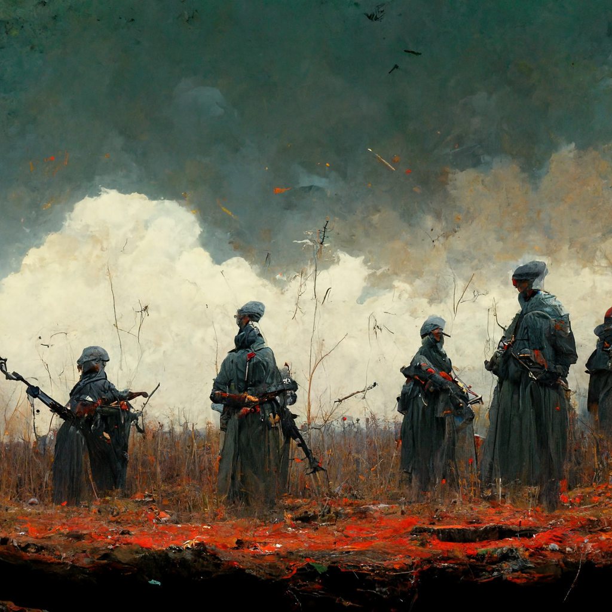
Appendix: Some Generative Art
Some images I generated with DALL·E:
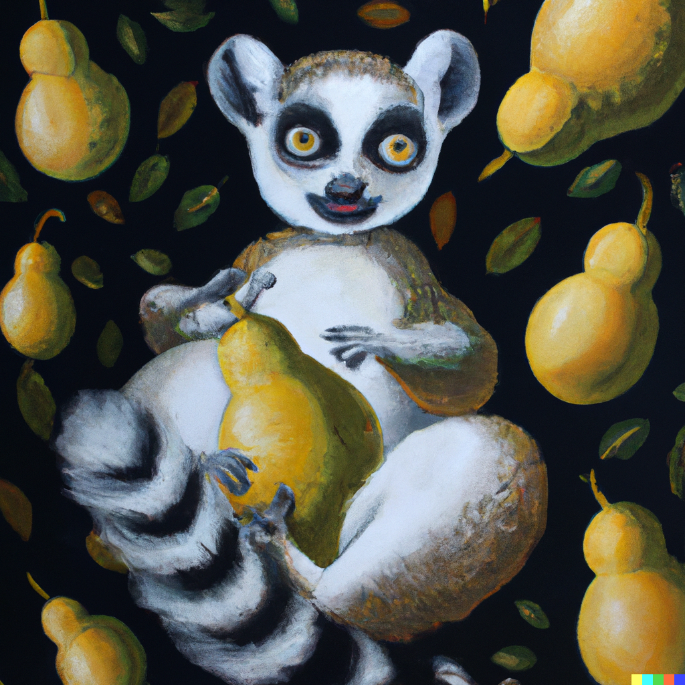
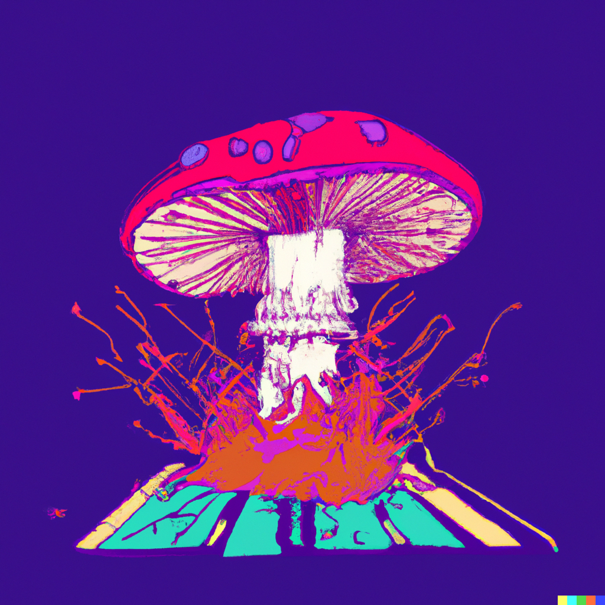
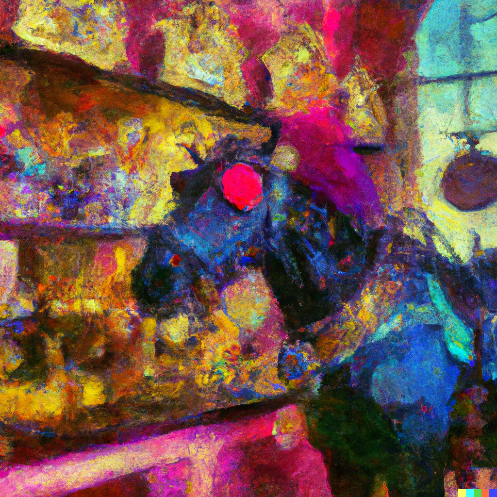
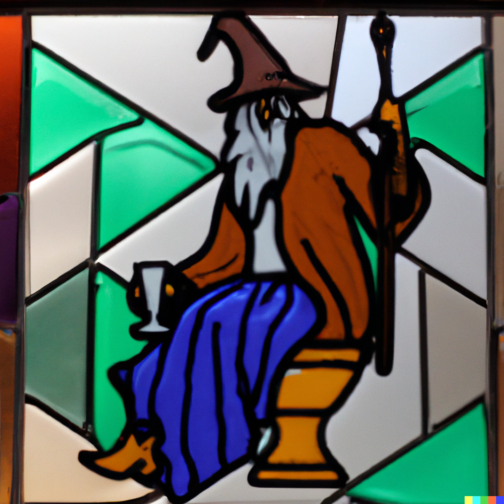
Some images I generated or watched others generate with Midjourney:
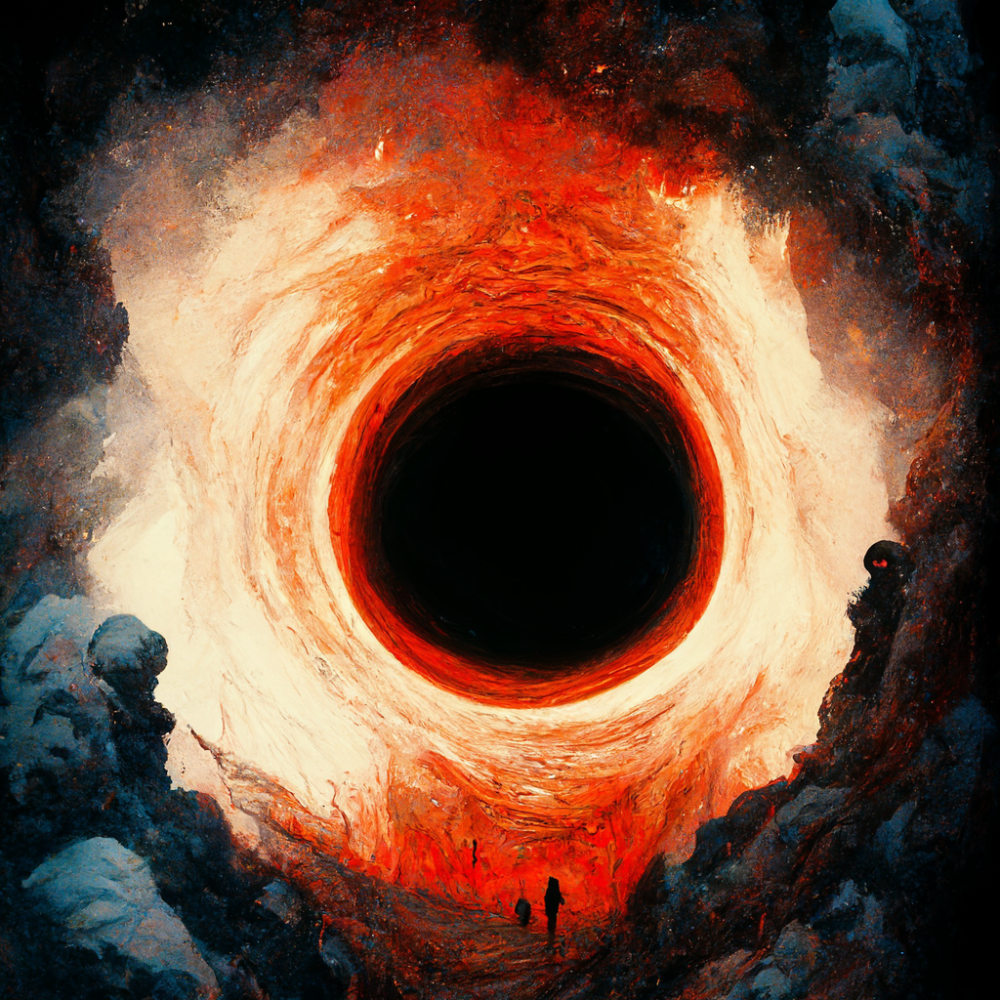
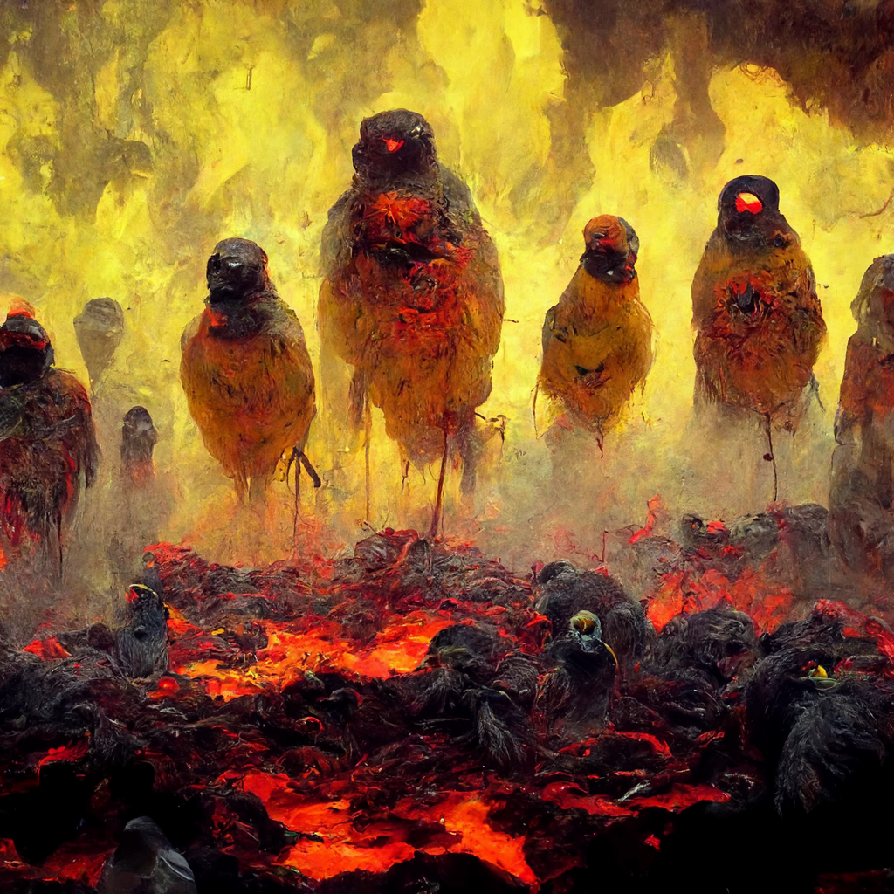
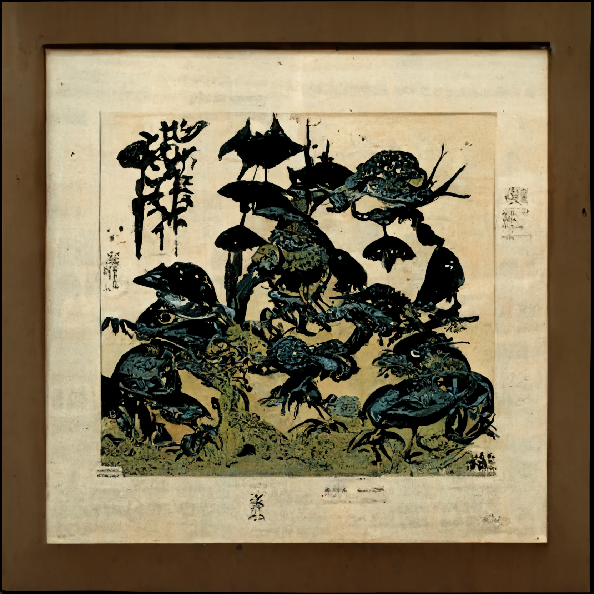

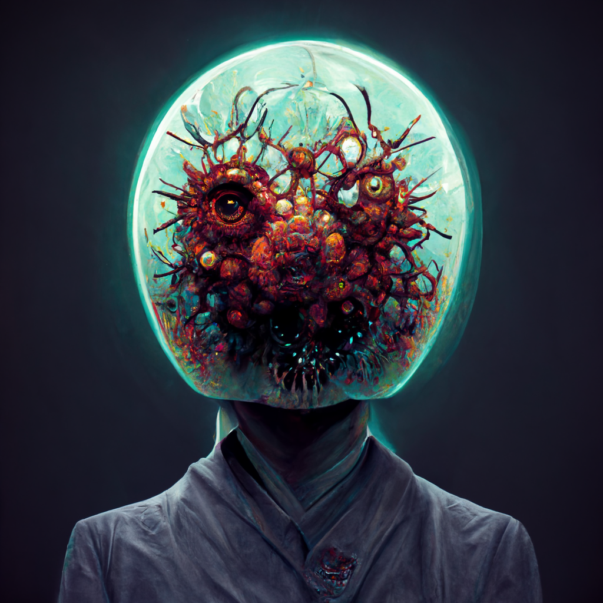
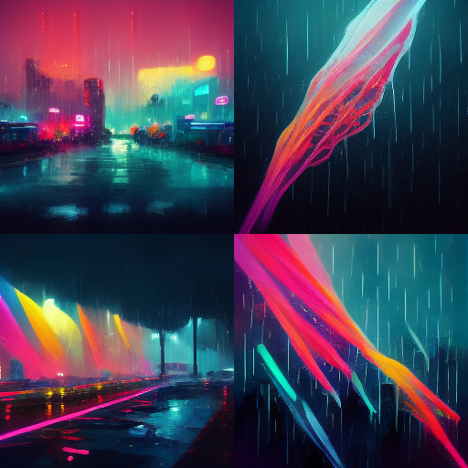
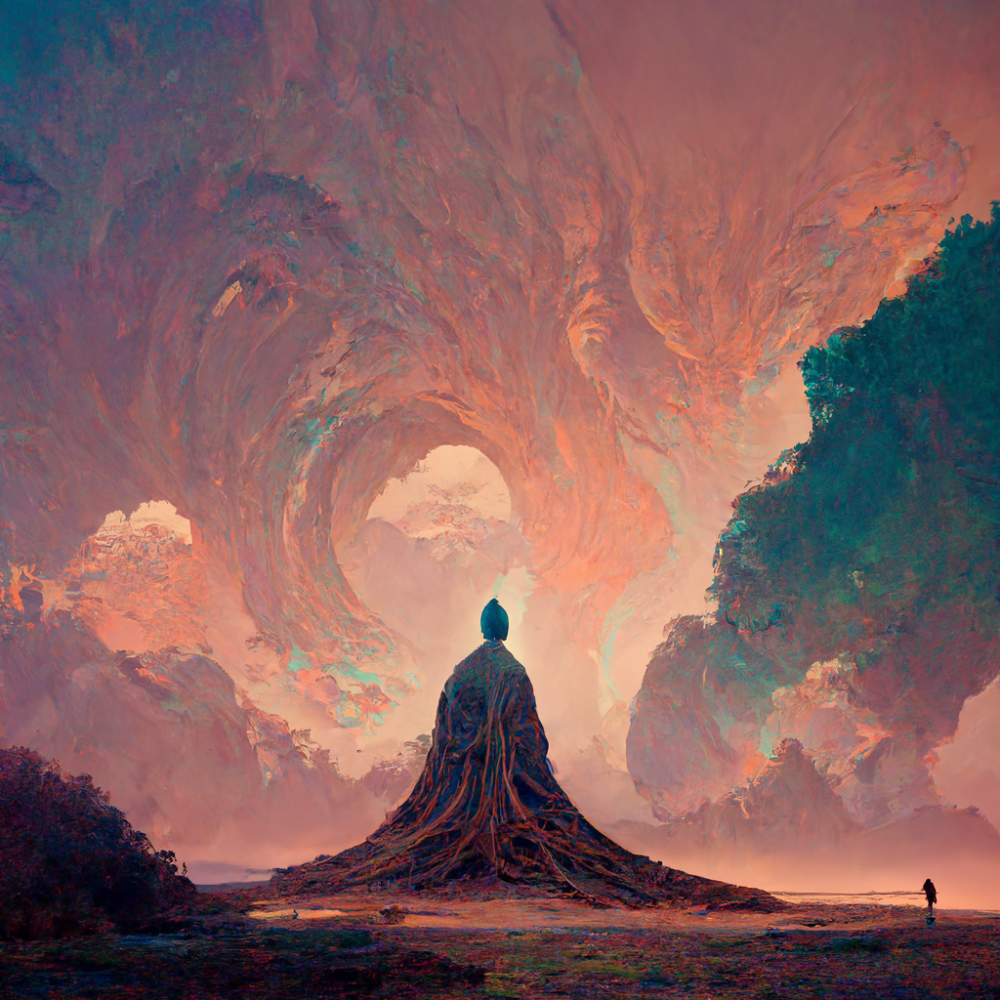